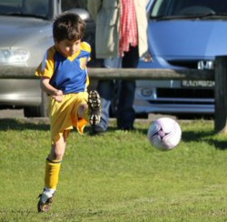
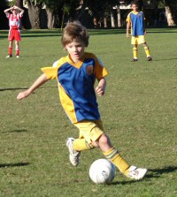
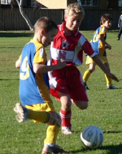
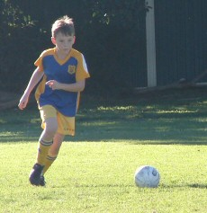
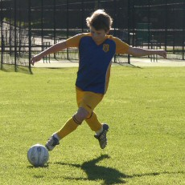
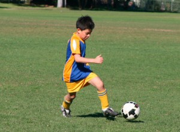
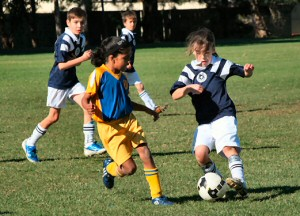
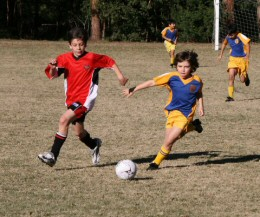
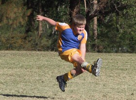
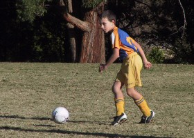

| Match Report - 04 July 2009 |
|
|
|
|
|
|
|
| U6 Red C |
North Ryde Red C - Gladesville Sharks

|
|
|
|
We kicked the ball and ran up the field. We scored some goals, but I forgot how
many. I played really well and got the trophy. We did our best.
- Kevin Farahani (Player, aged 6)
|
|
|
| U7 Red A |
|
North Ryde 6 - All Saints H/Hill B 1
|
|
|
|
There were two major improvements in the guys this week, and both played a part in
the convincing result.
The first was in following through of line ball's, or clearing kick's. Instead of
just waiting for the opposition to bring the ball back, the team has started following
through on these, and taking up on opportunities in the oppositions half.
Our second improvement was around shooting for goal when the opportunity comes to
hand. Throughout the season the guys have tended to try and get the ball close to
goal before taking a shot, and this has sometimes lead to us giving up possession.
This week we saw them shooting from further out, or as soon as they see a clear goal.
It opened up the game a lot more, and drove the guys to look for free space to open
up more options.
This weeks 'Best Ball Skills' certificate went to Alex G, the 'Best Team Player'
certificate was taken by Aden. Our best all rounder trophy went to Alex W.

- Rob Wylie (Coach)
|
|
|
|
|
|

We were a bit short on players again, but the Panthers agreed to play 4x4 until
another NRS player turned up. Thanks again to Daniel for filling the gap by quarter
time!
It was a game where each of our boys did their bit, and everyone scored a goal! With
many goals being kicked from half-way down the field, I think the boys are outgrowing
their small field, and will enjoy a bigger space next year.
I saw some very deliberate passing between Daniel and Angus, excellent defence from
Ben and Raph, and a well fought game from the Panthers. Jason was our player of the
week, for an oustanding improvement over his first season.
Thanks to the Panthers for their outstanding sportsmanship.
NRS 5, Panthers 2.
- Virginia Lau
|
|
|
| U7 Yellow |
|
North Ryde 2 - Ryde Saints United A 2
|
|
|
|
Well with such a wonderful morning weather we knew we were in for another great
morning of soccer and we weren't disappointed right up to the very last minute of
the game.
The boys were pumped and ready after their great win the week before, and as soon as
the whistle blew they were into it, their little legs were going 100 miles an hour.
Their training is definitely starting to show in their game with some great footwork
and passing on display, as well as their position on the field more spread out rather
than all just running for the ball at once.
Both teams were showing great defence and we were lucky to have Jay defend our goal
on several occasions in the first half. He even showed us some of his dance moves
with a high kick that stopped one of the attempts from going in.
Blake showed no fear in going up to the ball at any given time to retrieve it from
his opponent and always had his trusty team mates Jarrod and Luke with him in support.
By the second half the pressure was on after Saints scored a goal, and within minutes
they had managed to score another. Our boys didn't give in though and with some great
runs by Kaiden and some fancy foot work by Luke M we were able to pass the ball on to
our little goal scorer Jarrod and bring the score up to 2-/1.
With not much time left on the clock and the crowds going wild on the side the boys
held it together. Even our little man Alex got some kicks in before, amazingly, the
boys got the ball right on the whistle and drove home another goal to end the game
in a draw.
It was a really exciting game and each week the boys are bringing more and more to
the game, today showing that they don't give up when their chips are down.
Congratulations to Jay for winning player of the match today which makes his 7th
birthday weekend even more special.
Well done boys, you are proving to be a great little team to watch out for.
- Aleisha Cossettini
|
|
|
|
|
|
North Ryde U8 White produced our best game of the season on Saturday with a courageous
display put on by the whole team. With the flu ravaging the team during the week we
could only pull together a squad of 6 on the day. We knew it was going to be a tough
day playing a man down up against a Roselea team with 2 subs but we dug deep to pull
off a draw.
Highlights of the first half included Austin and
Connor's great work on defence along with
Salim's excellent attacking play at the other end.
Will played his best game of the season and was in the
thick of everything. The second half produced the most entertaining football of the
year. Lioda showed superb skills in the midfield and looked
dangerous every time she touched the ball. With some good passing we managed to get
the ball into our attacking zone where Zane was able to put
one past the goal keeper to put us 1 nil in the lead. Unfortunately playing the whole
game 1 man short eventually started to show and the North Ryde team and we started to
tire out which led to a late goal to draw the match for Roselea.
Player of the day this week went to Lioda who ran hard all day, was always in support
on attack and worked hard to get back on defence. Great game Lioda.
- Lee Crafar
|
|
|
|
|
|

The U9 Div 1's were up against it this morning in their encounter with a motivated
Kenthurst team, whose apparent hunger for the win may have something to do with
maintaining a top-four position on the ladder. It didn't help that Charlie and
David were both still recovering from a bout of flu, our star defender Tom Hurst
away on holiday in the UK, and a ref whose timidity seemed to count against us
time and time again during the match.

But the Div 1's were up for it, and they flew about the field with all the energy
they could muster, hunting for ball possession and seeking those infrequent
opportunities to bury it into the Kenthurst nets. I say nets, but can't really
remember if there were any? Most of the games so far have not had any nets attached
to the goalposts, which has led to several indecisive calls from the ref as to
whether a goal had been scored or not. But I digress. Some excellent teamwork up
front and a classic pass from Eli was well received by Shannon who went on to
score a great goal and give North Ryde the lead. Well done guys!
It is always difficult to remember all the passages of play during the match, who
did what and when, but I wanted to pick Jack out this time as a player I consider
to be one of the quiet achievers and workhorses of the team. A cool customer, Jack
is often seen somewhere in a defensive or midfield position, ripping the ball off
the opposition in a calculated way and engineering the start of a new movement in
his team's direction. Well done Jack, we see you

Kenthurst came out fighting even harder in the second half, desperate to find the
back of the North Ryde nets. There were several incredible fouls made against the
North Ryde players which, it must be said, beggared belief. Eli was first up, launched
into mid-air by a deliberate heave from his opposite number when he didn't even have
the ball. Shannon was the target of the second attack and went down in similar fashion,
fouled, if I remember correctly, by the same player who took Eli out. Adam came in at

number three, his foul not as spectacular as the first two but he did seem to cop a
few more later on as the game progressed. Still, the whistle remained silent. And so
did the North Ryde players, to their credit, showing restraint and patience when it
counted the most.
Kenthurst eventually got the goal they were looking for. A shot at goal from a rather
acute angle which was all but saved by the keeper, unfortunately just spilling over
the line after his valiant effort to stop it. This has been the story of the season
so far for North Ryde really, where most of the goals conceded have been more the
result of ill luck than they have been well constructed by the scoring side.
One goal each and midway in the second half. It was anyone's game now. Kenthurst went
at it hammer and tongs and made quite a few breaks at the North Ryde goals. But they
had Jett and Tom Maclean to contend with, who were both playing with courage and
determination in defence, using their strength and speed to shut down anything that
got too close to for their comfort. And if they did get through they'd always have
Harrison's big swinging right foot to deal with.
David looked for breaks down the right mid and Shannon down the left, Adam used his
dribbling wizardry down the centre with Jack and Patrick in support, while Eli and
Charlie hunted for their opportunities up front. They came close to scoring on a
couple of occasions even though the attempts were more opportunistic than they were
a smooth chain of connected passes and build-up towards the Kenthurst goals. The
final whistle eventually blew and they had to be content with the draw.
The Div 1's showed tremendous spirit today, and retained their composure when it
seemed the odds were a bit against them. I am always impressed with the high level
of effort and energy that they apply to their game, and I know we are yet to see the
best come out of this young group of skilful and talented players.
Soon, the penny will drop...
- Mark Howard
|
|
|
|
|
|

Equipped with fantastic weather and the sight of relief from the parents, we all
gathered at Morrison Bay Park not far from our official ground with great
anticipation. Everybody was pumped up and eager to get into the game.

All the players were showing great footwork and passing during the match. Oscar
displayed some fancy footwork and almost scored a goal 5 minutes into the game.
Both teams were showing great defence and Thomas Sharp defended our goal on numerous
occasions with his powerful and strong kicks and almost scored.
Peter showed great ball skills in the midfield and made us laugh with his fancy
crab-crawling footwork trying to keep the ball from West Ryde Rovers in the second
half. Samuel and Ryan did us proud by not let ball pass our goal line.
The pressure was on in the second half for both sides to score, but the boys and
girls held it together. The game ended in a draw but a good time was had by all.
It was a great game and the boys and girls showed us great skills but more training
on spreading around the ground and passing rather than running for the ball all at
once will enhance the skills greatly.
Congratulations to Hamish and Mathew for winning the award.
- Julia Chang (Parent)
|
|
|
|
|
|

A lovely sunny morning and a dry pitch met us Saturday, the team and their band of
supporters were full of energy despite the early hour and the cold.

What Einstein decided to send North Ryde and Putney to Kenthurst, of all places,
for a 9.15am start? The grey matter was on holidays when they came up with that
pearler.

Goalkeeping duties were shared by Tom and
Brooke who both did a great job. Both made some great
saves, quick goal-kicks to free space and long kicks down field.
Tim and Julian defended well
and made some excellent goal saving tackles. Saxon was
everywhere, passing and tackling.
Christopher did well to take the pitch given he was ill
and made some very good passes and throw-ins.
Ben was full of energy and helped out at the back and
in midfield. Benyad was in midfield and showed us his
excellent long kicks. Lucy tried very hard and was brave

after being kicked in the leg three times!
Maggie & Massie were both busy
up front and never stopped trying, well done guys. Luke
kept busy and made an excellent throw in.
The match result may not have gone our way but no one could question your effort.
With three reserves the "Substitution Committee" led by Kim & Annie deserve a
special thank you! Mainly for putting up with my vagaries
Thank you to all who braved the cold, early start and long journey to cheer our
energetic team on.
Well done all!
- Tony (Assistant Substitution Supervisor)
|
|
|
|
|
|
The boys produced their best game of the season today. Even though they were two
players down and had to play the whole game with only 10 on the pitch and no subs,
all the boys dug deep and pulled a great win out of the bag.
Matthew scored two goals, one was a great header and one
was a strong on-the-spot shot. Jackson made a great touch
on the ball and put it away. Mitchell scored with a great
header from a fantastic set move between Jackson and Amon from a corner kick. All
our strikers are providing fantastic finishes for our plays through the pitch,
always being prepared, and always following the ball until it's in the goal or dead.
Lucas provided strong cover in the middle of the park,
putting together some nice 1-2's, Joshua ran the whole
game on the wing and was very strong defensively as well.
Amon on the other wing was (and as usual!) 2 steps ahead
of the opposition, always with his eye on the whole game and just as deadly in
defence as Josh.
Our back line defensively was like the great wall of China with only one or two
balls getting past them the whole game. Matia is getting
quicker every week and his big left footed clearing kicks are a real bonus to our
arsenal of defences. Matia also put his hand up for a run in goals and kept a clean
card for the second half (well done Matia!). Morgan on
the right was his tireless self, running down every ball that entered his domain
and setting up some beautiful line balls to the wingers.
Jay was moved into the centre backs for the game and was
definitely channelling a bit of 'the Cobra' (aka Cameron) as his defences were at
full strength. Jay did a fantastic job of clearing the ball long and deep every
time it came within range. Christian dominated in the
goals in the first half being our rock of Gibraltar, and in the second half ran and
tackled like his life depended upon it (or his coach had promised him a treat).
Well done to all the boys, your focus and team spirit definitely shined through on
Saturday morning - I could not be prouder of your efforts.
See you all at training, and don't worry Christian I've got a treat for everyone...
I won't forget my promise
- Phil Butler (Coach)
|
|
|
|
|
|
What was that? A game of 2 halves played by 2 different North Ryde sides alias
Jeckyl and Hyde. The team that played the first half carried on from where they
left off the week before against Glenhaven defending strongly and challenging for
every ball. The marking was excellent and all in all the nil-all scoreline at
halftime probably flattered the opposition.
I don't know what was in the oranges at half time but whwtever it was caused a
metamorphosis in the team as they reverted back to all the evil old bad habits,
waiting for the ball to bounce leaving players unmarked and generally letting the
opposition play as they liked.
End result West pennant Hills scored 5 unanswered goals. A disappointing effort.
The result in no way reflects on the Under 14 players who helped out for us on the
days they all played strongly and never gave up. Thanks boys.
Hopefully the team can regroup for their next encounter. Heads up!
- Bill Greer (Manager)
|